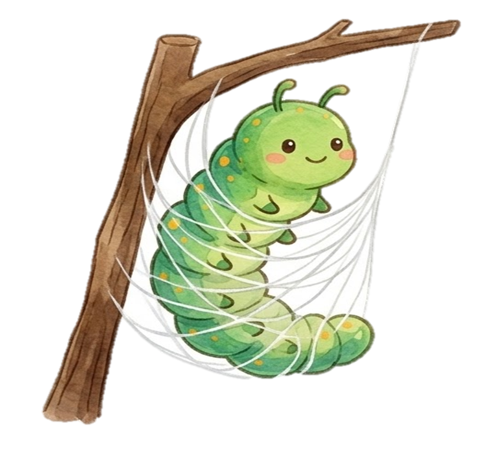
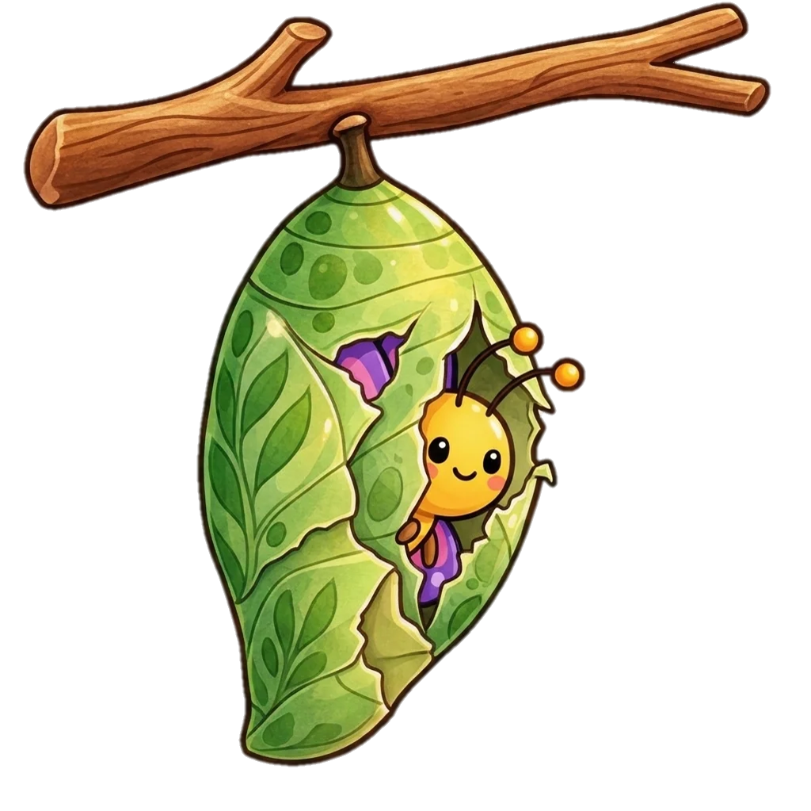
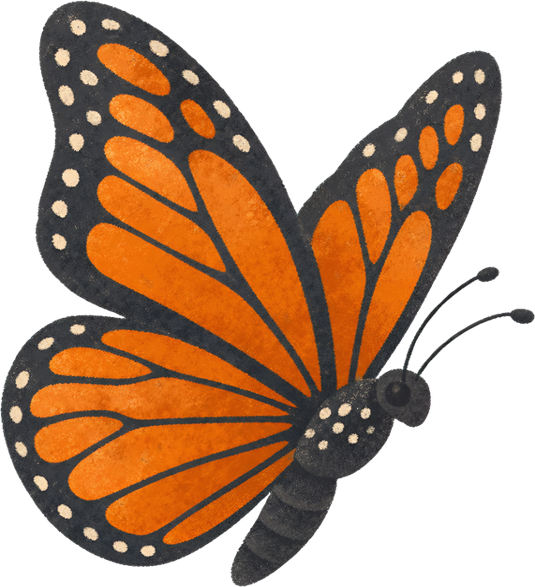

يا صديقي الصغير، هل تعلم أن الكائنات الحية تتغير وتكبر؟ تماماً
مثلما كنت طفلاً صغيراً وأصبحت تكبر وتنمو، فإن الفراشة أيضاً تتغيّر
وتكبر في رحلة جميلة تسمّى "دورة الحياة" هيا لنرى كيف تتحول البيضة
الصغيرة إلى فراشة ملونة! 🦋✨
💧✨💧
👆 المس البيضة لتسمع صوتها
١- البيضة
المرحلة الأولى 🌱
تبدأ رحلتنا مع بيضة صغيرة جداً تضعها الفراشة الأم بعناية على ورقة
شجر خضراء. تختبئ البيضة بسلام منتظرة اللحظة المناسبة لتخرج منها
المفاجأة! 🌿
أطعم اليرقة أوراق الشجر لتكبر! (0/3)
٢- اليرقة الجائعة
تخرج اليرقة الجائعة جداً، وتبدأ فوراً بأكل أوراق الشجر اللذيذة
لتكبر وتصبح أقوى. تأكل وتأكل.. وتنمو كل يوم حتى تستعد للمرحلة
القادمة! 🍃
✨🌟✨

👆 اضغط لتساعد الدودة على بناء الشرنقة
٣- الشرنقة
المرحلة الثالثة 💤
تُشكل اليرقة بيتاً آمناً حول نفسها يسمى الشرنقة، وتختبئ داخله
لترتاح وتنام بعض الوقت حتى يكتمل نمو أجنحتها الجميلة! ✨

👆 اضغط لتساعد الفراشة على الخروج
٤- الفراشة الجميلة
المرحلة الرابعة 🌸
تتفتح الشرنقة لتخرج منها فراشة رائعة بأجنحتها الملونة ترفرف في
الهواء! تطير الفراشات بين الأزهار وتستنشق الرحيق، وتبدأ الدورة
الممتعة من جديد بكل حب. 🌸
🎬 سينما الفراشة الجميلة
١- البيضة
٢- اليرقة
٣- الشرنقة

٤- الفراشة
وقت المشاهدة
اضغط على الفيديو وشاهد رحلة الفراشة الجميلة! 🎬🦋
🎨 لوّن فراشتك الجميلة بنفسك!
اختر لوناً ثم انقر على أجزاء أجنحة الفراشة لتلوينها واحصل على نجمة
الإبداع ⭐:
اختر لون الفرشاة 🖌️
❓ اختبر معلوماتك يا ذكي!
١- ماذا تأكل اليرقة الجائعة لتكبر؟ 🐛
٢- أين تختبئ اليرقة قبل أن تصبح فراشة؟
لعبة ترتيب دورة حياة الفراشة
اسحب كل صورة وضعها في رقمها الصحيح (أو اضغط على البطاقة ثم مكانها):
1الأولى
2الثانية
3الثالثة
4الرابعة
الشرنقة
البيضة
الفراشة
اليرقة
🎉 أحسنت يا بطل! رتبت دورة حياة الفراشة بنجاح! 🏆🦋
🌟
🌼
رائع يا بطل! أتممت الرحلة 🎉
تعرّفت اليوم على سرّ نمو الفراشة من بيضة صغيرة إلى فراشة جميلة تطير
بين الأزهار